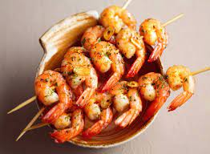

Spicy Baked Shrimp

These spicy baked shrimp are made with a perfect blend of spices! So easy and quick to make!
This recipe is perfect for the lazy nights when you want something quick to make that takes only 15 minutes.
This meal tastes like Michellen starred restaurant quality with the simplicity of a PB & J.
Ingredients
- ½ cup olive oil
- 2 tablespoons Cajun seasoning
- 2 tablespoons lemon juice
- 2 tablespoons chopped fresh parsley
- 1 tablespoon honey
- 1 tablespoon soy sauce
- 1 pinch cayenne pepper
- 1 pound uncooked shrimp, peeled and deveined
- cooking spray
Steps
- Whisk olive oil, Cajun seasoning, lemon juice, parsley, honey, soy sauce, and cayenne pepper together in a large glass or ceramic bowl. Add shrimp and toss to evenly coat. Cover the bowl with plastic wrap and marinate in the refrigerator for 1 hour.
- Preheat the oven to 450 degrees F (230 degrees C). Spray a baking dish with cooking spray.
- Transfer shrimp into the prepared baking dish and pour any remaining marinade over top.
- Bake in the preheated oven until shrimp are bright pink on the outside and the meat is opaque, about 10 minutes.